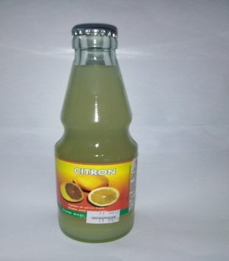
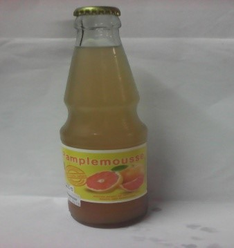
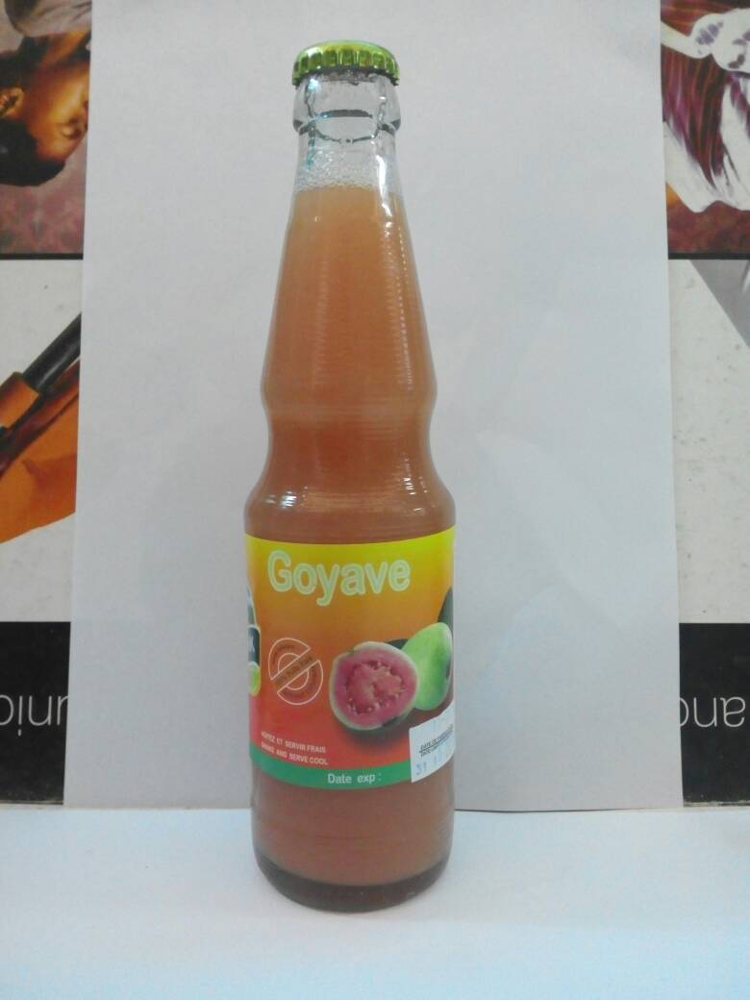
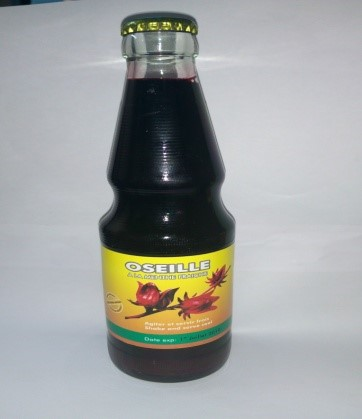
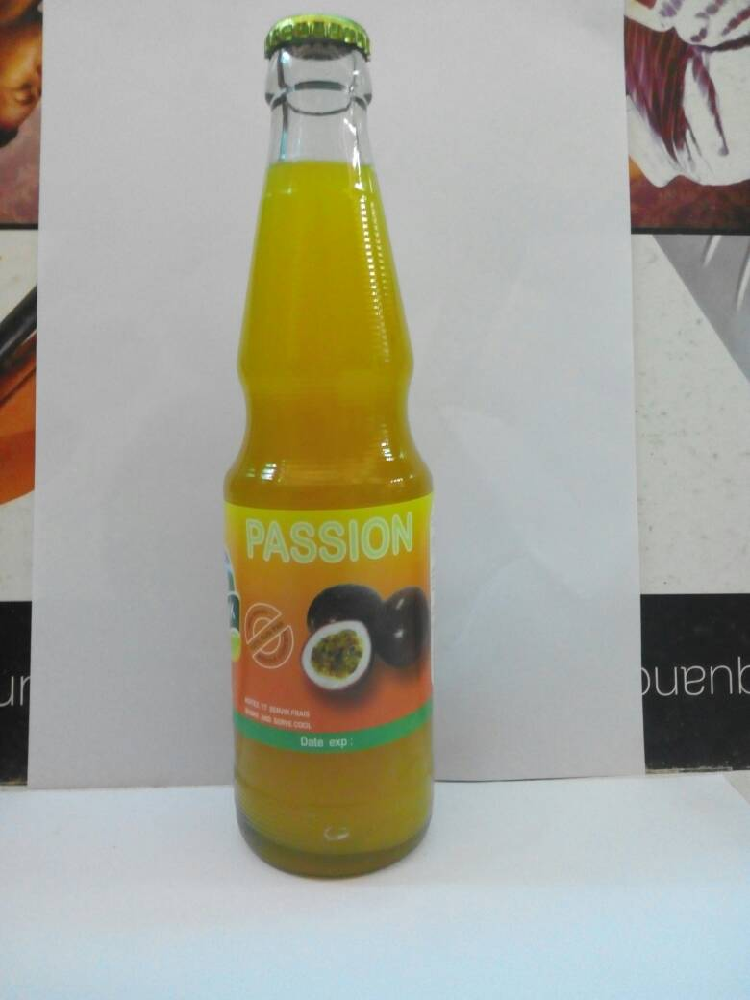
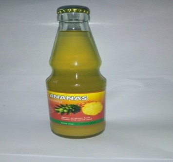
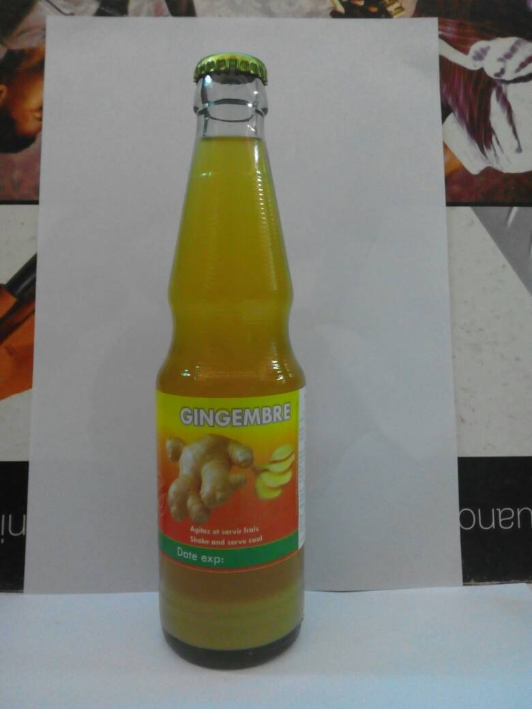
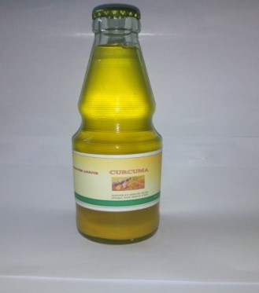
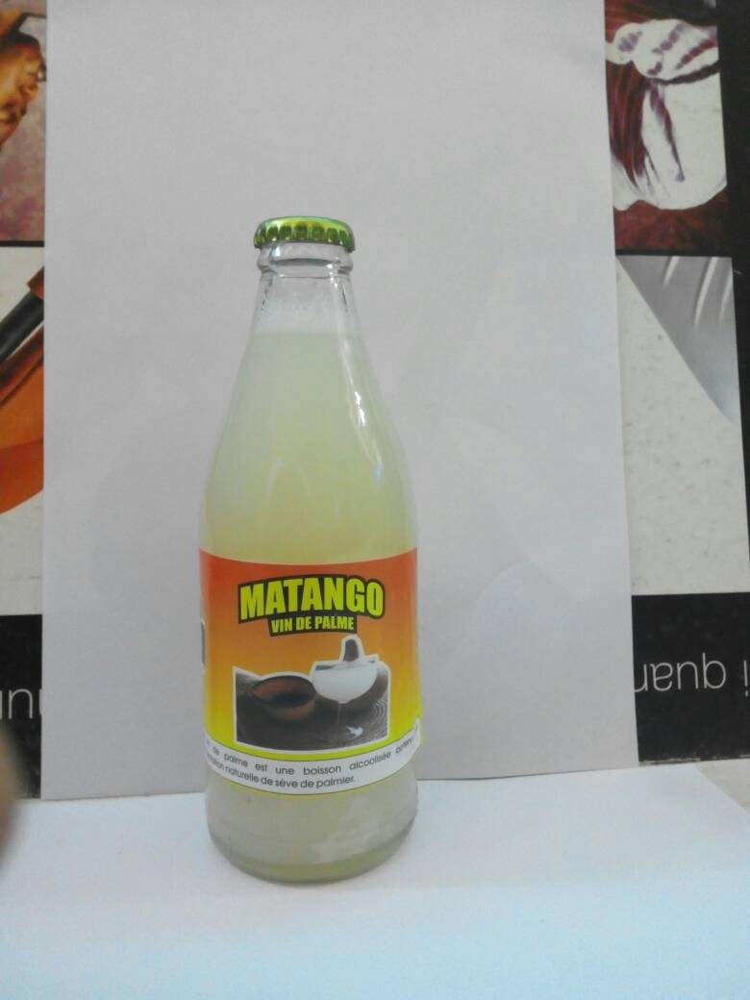

Products
-
All Time Classic
Ces jus sont 100% naturel,et sont fait à base de fruits frais,sans colorant.
-

Jus de citron
le jus de citron,traite tous types d’infections, et combat l’asthénie.
-

Jus de pamplemousse
le jus de pamplemousse est conseillé aux fumeurs et diabétiques.
-

Jus de Goyave
Le jus de goyave est un un antifongique et anti inflammatoire .
-
Berry Special
Plus de jus pour vous......
-

Jus d'oseille
le jus d'oseille est 100% naturel, fait à base de racines fraiches de gingembre,et sans colorant.Il Conseillé aux personnes qui souffrent des maladies des reins.
-

Jus de Passion
Le jus de la passion est un jus 100% naturel fait à base de fruits frais de passion, sans colorant, sans sucre ajouté ni autre additif.C'est un antioxydant avéré
-

Jus d'Ananas
le jus d'ananas contient le sucre naturellement présent dans les fruits ; sans eau et est un tres bon antiseptique, anti inflammatoire,et anti tumorale.
-
Fruit Blast
Des jus avec de vertus rare...
-

Jus de Gingembre
Le jus de gingembre est fait à base de racines fraiches de gingembre, sans colorant,il est super tonifiant et aphrodisiaque.
-

Jus de Curcuma
Le jus de curcuma est fait à base de fruits frais du curcuma, sans aucun additif.Il est conseillé aux diabétiques, aux personnes atteintes des ulcères gastriques, du cancer, des infections bactériennes, intestinales, et virales.
-

Le Matango Bio
Le Matango drink est un vin de palme 100%naturel à base de sève du palmier, sans aucun additif.